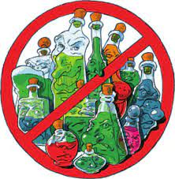
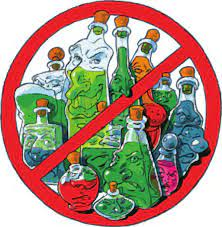

Mas Información: |
||
|  | LOS 12 COPS MÁS SUCIOS | |
| Daños que ocasionan los cops |
Los COPs |
¿Qué es un contaminante orgánico persistente?Los Contaminantes orgánicos persistentes son un conjunto de compuestos orgánicos fabricado artificialmente por el hombre que tiene un tiempo de persistencia en el ambiente muy largo. Al ser un compuesto artificial, las bacterias y demás organismos no pueden descomponerlo y degradarlos fácilmente. Muchos tienen efectos acumulativos, ya que se almacenan en los tejidos grasos fijándose en la cadena alimenticia y pueden tener efectos hormonales. Estas sustancias se transportan a grandes distancias a través del aire y el agua y se han dispersado por todo el mundo, hasta regiones muy distantes de su fuente original. La comunidad internacional tiene ahora que tomar acciones globales urgentes para eliminarlos. SON CONTAMINANTES PORQUE…En muy bajas concentraciones afectan gravemente la salud de los seres humanos, animales y el ambiente. Algunos COPs, en concentraciones extraordinariamente bajas, pueden alterar funciones biológicas normales, incluyendo la actividad natural de las hormonas y otros mensajeros químicos, y disparar una serie de efectos potencialmente dañinos. SON PERSISTENTES PORQUE…Permanecen mucho tiempo en el ambiente, incluso decenas de años, resistiendo la degradación por el sol, su degradación química y la degradación por otros microorganismos. SON BIOACUMULABLES PORQUE…Se acumulan en los tejidos grasos de los organismos. Se biomagnifican, es decir, aumentan su concentración en cientos o hasta millones de veces a medida que van subiendo en las cadenas alimenticias. Los COPs tienen generalmente alta solubilidad en lípidos (se disuelven fácilmente en grasas y aceites) y baja solubilidad en agua (no se disuelven fácilmente en agua). SE DISPERSAN …Los COPs son generalmente semi-volátiles, es decir que que se evaporan a una velocidad relativamente lenta. Se dispersan ampliamente en el medio ambiente, a través del viento, ríos y corrientes marinas, trasladándose a todas partes del planeta. Se han encontrado en el agua, suelo, sedimentos, animales y personas, incluso en el Artico y en lugares muy alejados de donde originalmente fueron liberados. Cuanto más frío es el clima menor es la tendencia de los COPs a evaporarse. |
Mas Información: |
||
|  | LOS 12 COPS MÁS SUCIOS | |
| Daños que ocasionan los cops |